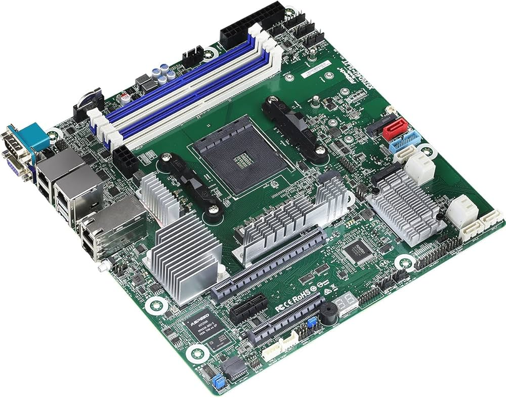

Sunucu ve iş istasyonları için optimize edilmiş, güçlü ağ bağlantıları ve ECC bellek desteği sunan profesyonel anakart.
| Özellik | Değer |
|---|---|
| Soket | AM4 |
| Chipset | AMD X570 |
| RAM | 4x DDR4 ECC UDIMM (128GB’a kadar) |
| PCIe | PCIe 4.0 x16 + ek slotlar |
| Depolama | 2x M.2 NVMe, 8x SATA |